schneefotos
von elias am sonntag, 22. februar 2026
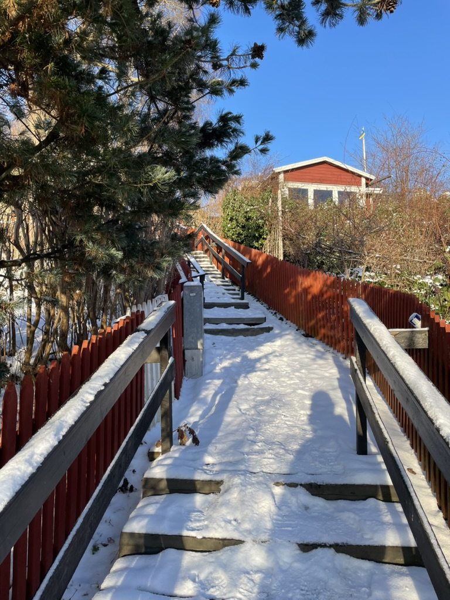
Hier gibts heut einfach nur ein paar Bilder von Winter und Schnee. Vielleicht paar Untertitel. Text gibts wann anders mal wieder.
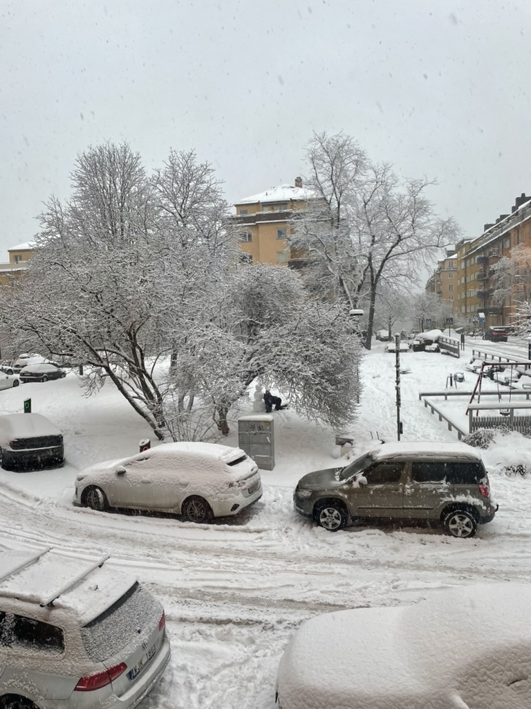
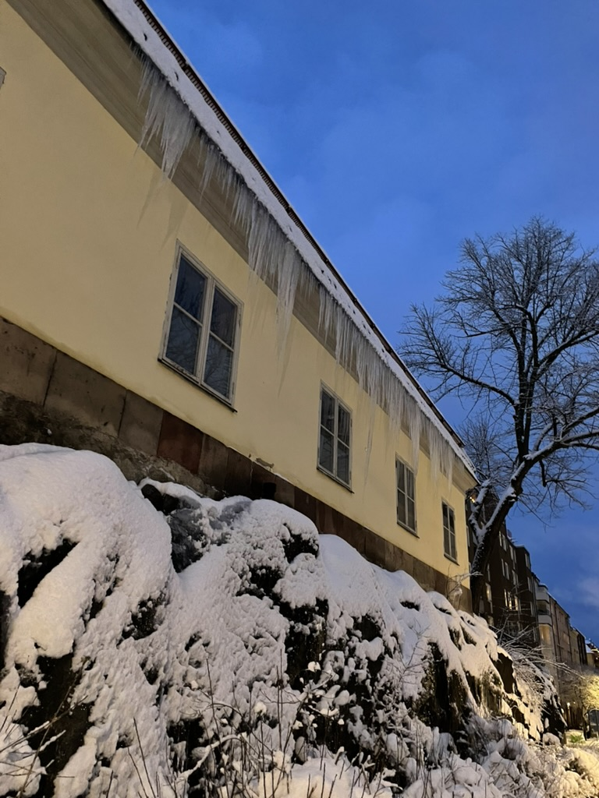
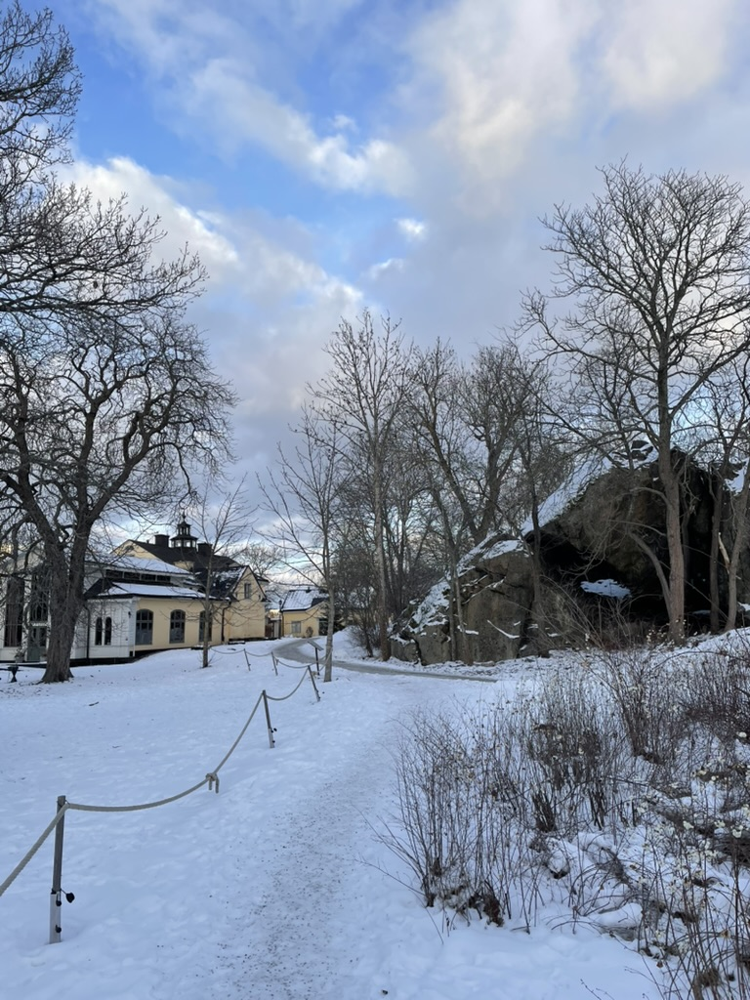
Anfang Januar hats sau viel geschneit. War echt mega viel. So viel wie seit 20 Jahren nicht mehr oder so. Echt heftig. War auch ein wenig geblieben aber dann nach zwei Wochen irgendwie alles weg wieder.
Dann sah es mehr so aus.
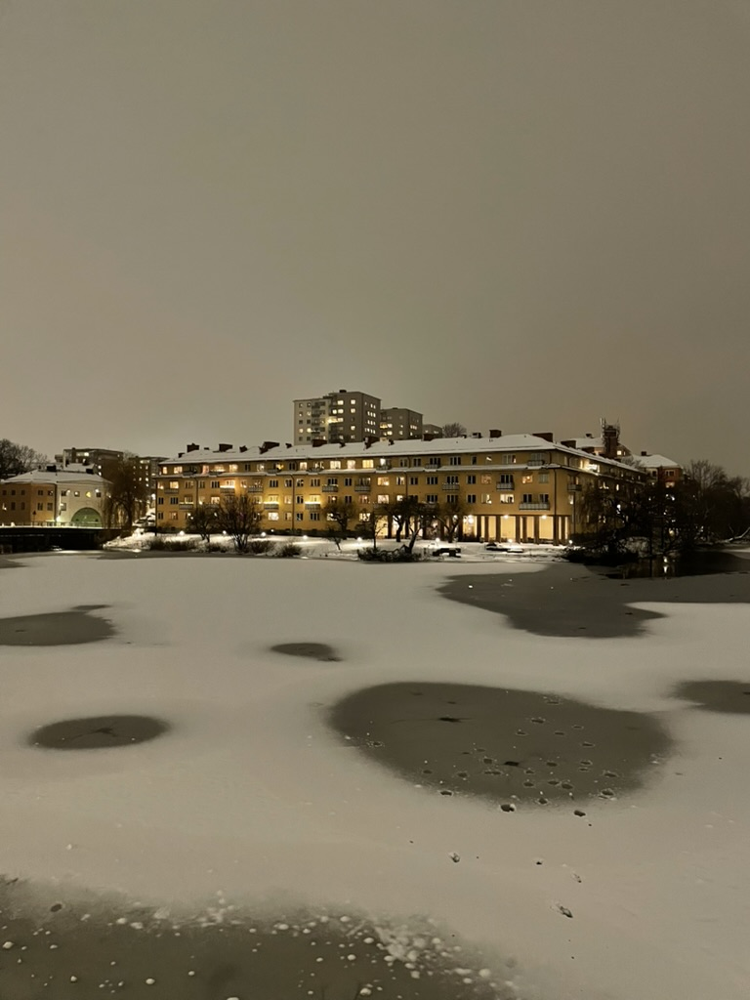
Aber Ende Januar ging es richtig los, mega kalt. Minus 15 und dann ist der See und eigentlich fast alles zugefroren. Und die Sonne war auch da dauernd. So kann man dem Winter fast verzeihen. Einmal bin ich auch aufs Eis. Jeden Tag sind Leute eingebrochen, aber das hab ich mir schön erst danach erzählen lassen. War schon super, es hat so futuristische Töne gemacht auf dem Eis, wie man sich eine Laserpistole vorstellt, aber die sollte ja vermutlich gar kein Geräusch machen. So wie die Gleise bevor ein Zug vorbei kommt nur viel lauter und es ist so von links nach rechts geflogen, mit Echo. Super!
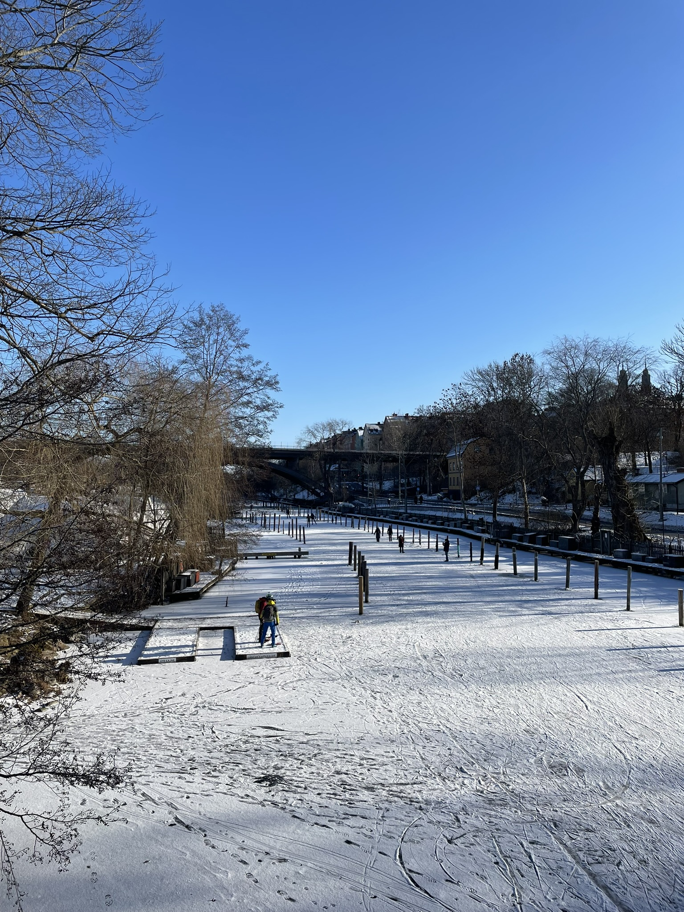
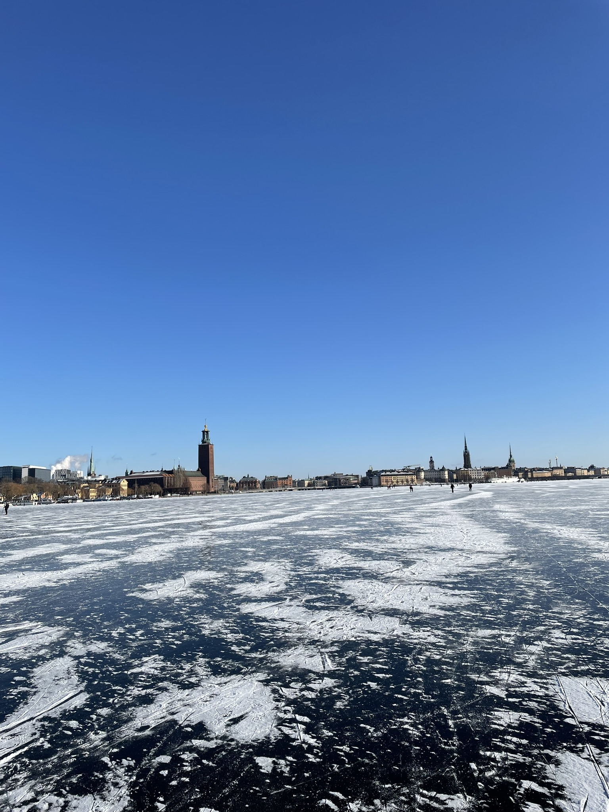
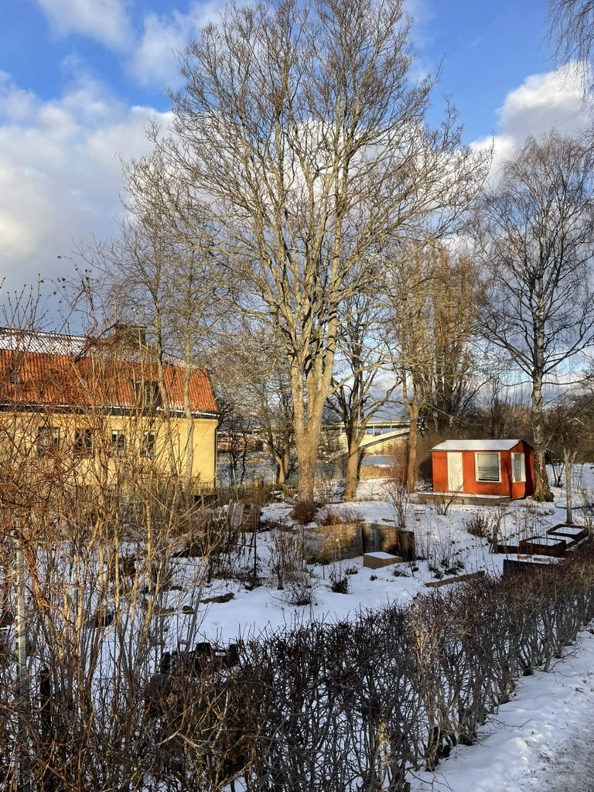
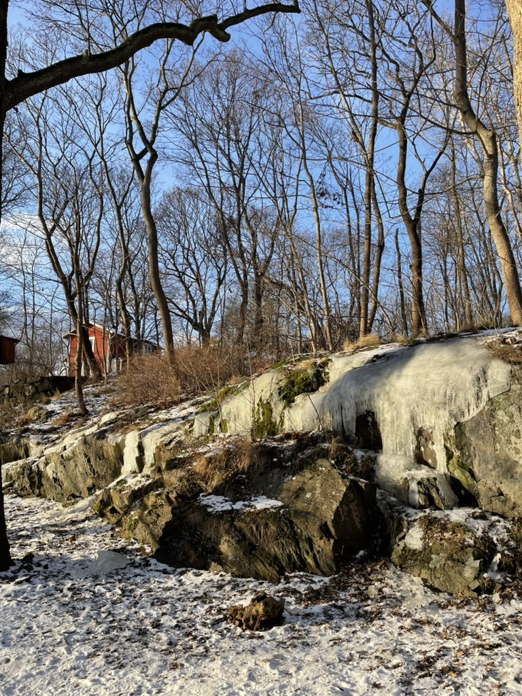
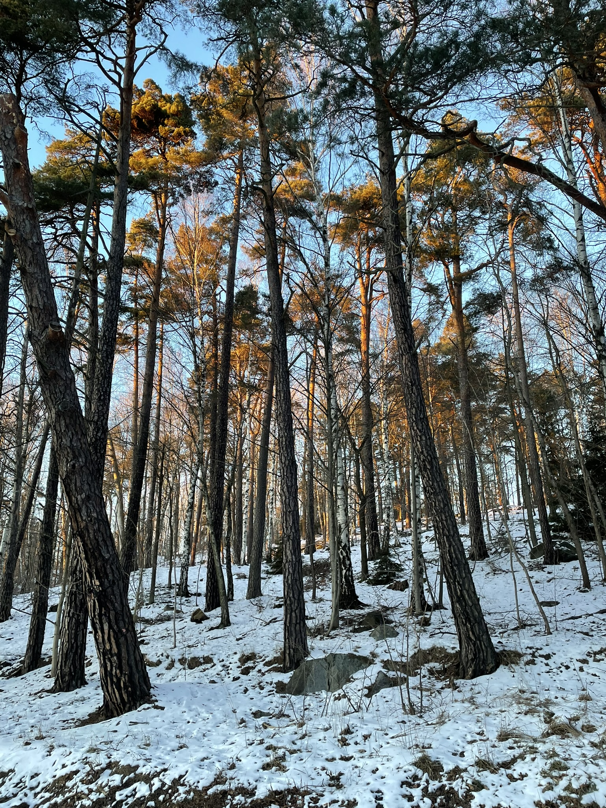
Sonnenuntergang darf auch nicht fehlen.
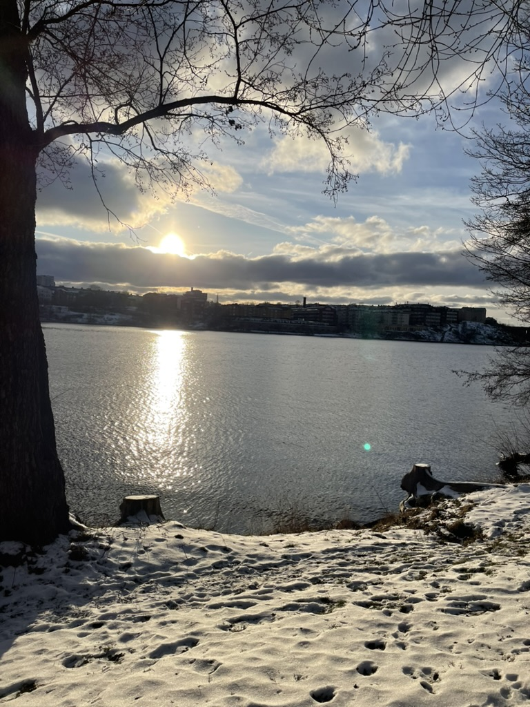
Dann kam gestern auch nochmal Schnee aufs ganze Eis, aber jetzt wirds wärmer, schade.
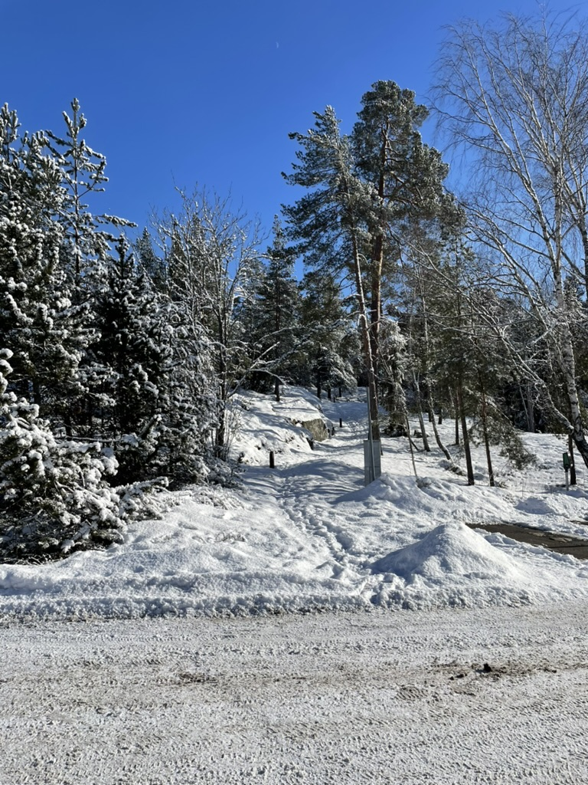
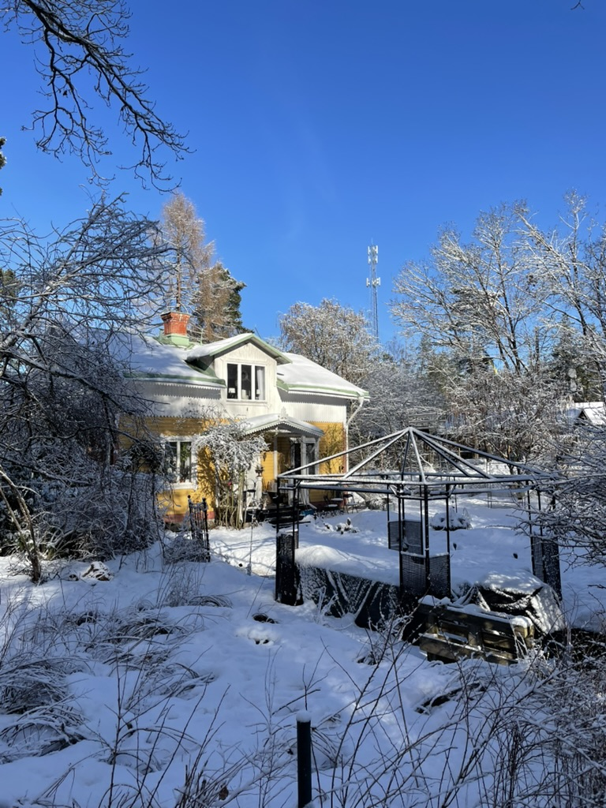
Ist schon schön und alles aber Sommer ist irgendwie einfach geiler.